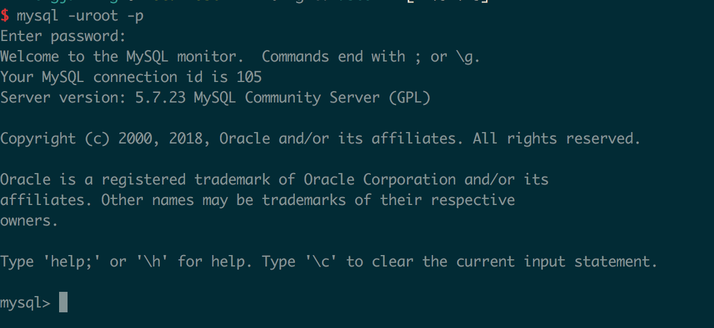

1. Mysql断开与连接
1.1. 系统偏好设置
 点击mysql
点击mysql
1.2. start or stop
1.3. 输入用户密码

1.4. 连接mysql服务器
打开terminal
mysql -u root -h 127.0.0.1 -p password
其中-u代表用户名 -p代表密码 -h代表MySQL服务器所在地址，可以省略不写。为了保护MySQL数据库的密码，可以采用下图的密码输入方式，不用明文的方式显示密码。

如果出现上图说明成功，如果出现
command not found: mysql
说明环境变量有问题，解决方法如下：
1.4.1. 打开配置文件
vim ~/.bash_profile
1.4.2. 添加path
export PATH=$PATH:/usr/local/mysql/bin
1.4.3. 让文件生效
source ~/.bash_profile